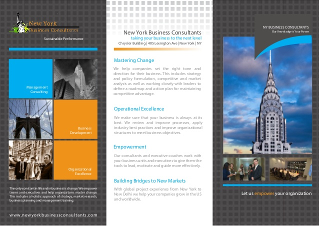

I get up to speed quickly
I absorb unfamiliar topics, understand their context and terminology, and turn what I learn into clear, credible content.
I learn new subject areas quickly, research them thoroughly, and find the angle that makes people stop and read. My approach combines curiosity, careful research, audience insight, and a feel for the right voice.
I bring a research-led mindset to every brief: I learn, verify, listen, and connect information with the people and ideas behind it.
I absorb unfamiliar topics, understand their context and terminology, and turn what I learn into clear, credible content.
I cross-check information and pay attention to reliability and nuance. Research is the foundation, not a finishing touch.
I look for the detail or perspective that makes a familiar subject feel fresh, then shape the voice around the audience and the brand.
This section features four English-language projects, including brand storytelling, B2B content, executive-facing marketing copy, and video scriptwriting.

Content development for an Israeli luxury jewelry brand speaking to mature British women. I developed audience personas and a brand voice, then wrote English-language storytelling and copy — from narrative concepts to understated, elegant copy for pink diamonds.
The work called for a voice that felt refined and emotionally resonant without becoming overstated: the language needed to serve both the audience and the character of the jewelry.
The first-person stories were written as marketing concepts from a defined persona, not as testimonials from real customers.
SEO-focused B2B content for a SaaS platform that helps startups and B2B organizations discover high-quality leads and track intent signals.
A practical guide to finding business and personal email addresses, researching prospects, and shaping relevant outreach through five adaptable email formats.
A B2B guide to lead quality and personalization, turning a complex sales topic into practical advice for more relevant prospect outreach.

An executive-facing one-pager introducing AL Consultants’ organizational consulting, management development, and executive coaching services. Created for the firm’s launch at a Manhattan leadership conference, it brought a broad offer into a clear, polished overview for the professionals attending.
The client brought a few rough ideas across two or three partial lines and asked for a spoken-word style. I shaped them into a personalized video script with a clear flow and message.
Even in the most crowded content spaces, there are stories worth uncovering.
I look for the point of entry that turns information into a story people want to keep reading.
A flexible skill set for projects that need both thoughtful content and a reliable process.
Across formats, voices, and audiences.
From brief to polished delivery.
Noy Mills · Research - Insight - Writing